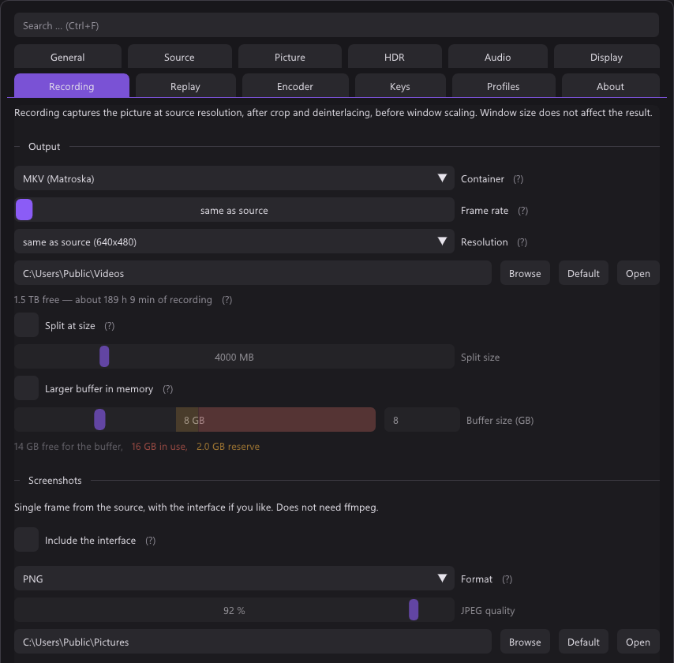

src/record/recorder.cpp, src/record/recorder.h

Frames and samples go to ffmpeg's encoders inside the process, through the
libraries ffmpeg loads, and a thread of its own writes the packets to
the file. Up to 6.0 an ffmpeg.exe child process took them over pipes; why
that changed is below. Two rules shape the
whole design.
Rule 1: the display path is never blocked
PushVideo() is called from the render thread with a freshly read-back frame
(for a hardware encoder the picture stays on the GPU).
It copies it into a buffer from a pool (AVBufferPool) and returns. The video
thread hands that buffer to the encoder by reference, so nothing copies it a
second time, and a buffer only goes back to the pool once the encoder has let
go of it too.
If the encoder cannot keep up, frames are dropped from the recording, never from the screen. The screen is what you play on.
The readback itself is asynchronous. QueueReadback() converts the picture on
the GPU into exactly the YUV layout the encoder takes, copies it into a staging
texture, and FetchReadback() maps it two frames later, so the display path
never waits on the GPU. The recording is therefore a frame or two behind the
screen, which is the right trade. The encoder converts nothing: it is opened
with the format the bytes already are.
Hardware encoders: no readback
Since 6.1. NVENC and AMF take D3D11 frames, and get the picture without it ever passing through system memory:
- The recorder makes three textures on its own D3D11 device and shares them
(
SharedFrames,src/render/shared_frames.h): NT handles, each with a keyed mutex. The renderer opens them under D3D11, or imports them as external memory under Vulkan, and the YUV pass draws into one instead of a staging texture. PushGpuFrame()marks the slot ready. A ready slot the video thread has not taken when the next one comes is dropped, as a frame would be.- On the video thread
kYuvSplitPS(src/record/gpu_frames_win32.cpp) splits the one-plane picture into an NV12 or P010 frame from the encoder's pool (av_hwframe_get_buffer).
A slot goes Free → Writing → Ready → Converting → Free. The log line says
nv12 on the GPU.
A slot goes back by fence since 7.0: the split signals an ID3D11Fence,
and a threadpool wait frees the slot once the GPU is through with it. Before,
the slot went back as soon as the split was queued, the renderer's next
picture into it waited for the split on the GPU, and the display with it: on
Silent Hill f at 1440p it dropped 36 frames a second while recording, now none.
4:4:4 goes as CUDA frames, to NVENC, the one hardware encoder that takes
it; no D3D11 format holds planar 4:4:4. The yuv pass draws the three planes
one under the other. The recorder's device copies the slot into a texture of
its own (CUDA does not register one shared by NT handle) and hands the slot
back; three cuMemcpy2DAsync move the planes into a frame of the pool.
nvcuda.dll is loaded at run time; without it 4:4:4 is read back. Measured at
1080p: 265 MB less RAM, CPU 18 % of one core instead of 24 %, files identical
to the readback.
Still read back: software encoders, Quick Sync (takes only its own qsv
frames, not D3D11 ones) and the virtual camera.
Falls back without a restart when the renderer cannot share
(RefuseShared()), or after three frames in a row that do not come through.
The encoder stays open: frames from PushVideo() are uploaded into its pool
(av_hwframe_transfer_data).
Measured at 1080p30, three runs each: about 245 MB less RAM while recording, CPU 12 % of one core instead of 17 %, frame age unchanged, files identical to the readback path on D3D11 and Vulkan, SDR and HDR. The CPU only ever did one copy per frame each way, into the pool and the driver's copy back up; the RAM held the staging ring, the pool and the encoder's input. AMF is untested.
Rule 2: audio is the master clock
The card's clock and the PC's clock drift apart over an hour. The video timeline is derived from the number of audio samples written, duplicating or dropping frames to match — which makes sync arithmetic instead of hope, and produces constant frame rate output, which both MKV and MP4 prefer.
if (audioIsMaster) target = (uint64_t)((double)audioFrames / (double)audioRate_ * fps_);
else target = (uint64_t)(TicksToSeconds(now - originTicks_) * fps_);Measured drift over the file: 1 ms over 15 seconds.
The frame rate setting
0 takes the source's rate. A lower one drops frames on the same timeline. One
above the source is capped at it in Recorder::Start, and the stored value
stays: a 60 set for NTSC is still there when PAL's 50 has come and gone. Card,
screen and window each keep their own (RecordSettings::FpsFor), so a screen
held at 60 leaves a card on "same as source" alone.
When audio cannot be the master
Two cases, both handled by falling back to the wall clock:
At the start. Until the first samples arrive. The wall clock starts when the
encoder has opened (originTicks_), not at Start(): NVENC takes a tenth of a
second and more to open, and counted from Start() the first frames would all
be late. Whatever audio arrived before that is thrown away, because it belongs
to no frame.
If it stops. A device disappearing mid-recording would otherwise freeze the video timeline forever:
const bool audioStalled =
lastAudioProgressTicks_ != 0 && TicksToSeconds(now - lastAudioProgressTicks_) > 2.0;Two seconds of no progress, then the wall clock takes over and a warning goes to the log.
Every frame at its slot
uint64_t first = written;
if (!raw && target - written > 1) {
first = target - 1; // the slots before stay a gap
leftOut_.fetch_add(first - written, …);
}
for (uint64_t i = first; i < target && running; ++i) {
frame->pts = (int64_t)i;
result = av.avcodec_send_frame(s->video, frame);
…
}A frame placed a slot early would make the video shorter than the audio and desync the file for good, so each goes out at its slot's number. If the encoder stalls, it stalls right here — on the video thread, not on the renderer.
Slots it fell behind on are left out, since 7.0. Up to 6.1 the held frame was encoded again into each one: a whole frame of encoder time apiece, which kept an encoder near its limit behind for good, with the one picture over and over in the file. Now it goes out once, at the newest slot due. The gap before it plays as the previous frame standing, the same as a repeat, and the encoder's time goes to the next fresh frame. Uncompressed keeps every slot: a repeat there is one more reference to the same buffer.
duplicated_ counts both, for the statistics overlay; leftOut() only the
slots the encoder was still busy for, which the file shows as a stutter.
What gets recorded
The picture at source resolution, after crop, deinterlacing and rotation, and before window scaling. Window size does not affect the result, and neither does sharpening. Unfiltered records the card's frames instead, see below.
Odd sizes break 4:2:0 chroma, so the width and height are always rounded down by a
pixel (width & ~1). The alternative is telling somebody their 1439 pixel
capture cannot be recorded, which helps nobody.
Resolution (record.maxLines, since 7.0) caps the short side, 2160 down to
360: 720 means 1280×720 lying down and 720×1280 turned (CappedRecordSize()).
Only ever down, both sides even. The delivery pass scales into a target of the
recording's own, so the screen and the camera keep their size. Unfiltered
ignores it.
A screen or a window is recorded the same way as a card.
Where files go. Lossless ones into raw\ as qBlank-raw_…, replay clips
into clips\ as qBlank-clip_…, so neither sits among the recordings somebody
shares. Named to the second, with a number when that name is taken.
Threads
| Thread | Does |
|---|---|
| Video | Opens the encoders and the file (Open()), then encodes the frames |
| Audio | Pulls every source, makes the mix, encodes every track |
| Muxer | Writes the packets to the file, from a queue |
| Closer | After Stop(): flushes the encoders and writes the index |
The muxer has its own thread because the disk may pause and the encoders must not. A drive that wakes up takes a second; the packets wait in the queue meanwhile, up to 512 MB: seconds of an encoded file, under two of an uncompressed one. Past that the disk is simply slower than the encoder, and the recording stops with The disk cannot keep up with the writing rather than running out of memory.
Larger buffer in memory (Recording tab, since 6.1) raises the 512 MB to 1–256 GB. Nothing is reserved; it only fills while the disk is behind.
- The size is a ceiling: the buffer takes at most what is free beyond 2 GB left for other programs, checked at the start and once a second, never less than 512 MB. The log says what it got against what was set.
- The indicator shows the fill from 10 %, amber from 75 %. A toast at 75 %, again only once it fell below half.
- Full stops the recording; what is in the buffer still goes into the file.
- The disk space check counts what still waits in it.
Stop() returns at once. What the encoders still hold — look-ahead and
B-frames, the last part of an audio frame — and the container's index take
seconds with a slow preset, and neither the picture nor the next file of a
split should wait for that. The closer does it; each one joins the one before,
and TakeFinished() says when a file is done.
What the encoder is told
Recorder::Open() sets up the encoder's context; EncoderOptions() adds what
the settings say, in the words of that encoder (see
Encoder settings). The log line at the start shows all of
it:
Recording: hevc_nvenc 720x576 nv12 at 50/1 fps, rc=vbr preset=p5 …, 3 audio tracks at 48000 HzA few things are load-bearing:
The pixel format is one value, used twice. Recorder::FormatFor() picks a
YuvFormat (matrix, layout, where the ten bits sit) at Start(), the renderer
draws exactly that, and FfmpegPixelFormat() names it for the encoder. So
nothing converts, and PushVideo() drops any frame of another format rather
than handing over bytes the encoder was not opened for.
| Layout | 8 bit | 10 bit, hardware | 10 bit, CPU |
|---|---|---|---|
| NV12 (hardware, x264 SDR) | nv12 | p010le | — |
| I420 (x265, SVT-AV1, x264 HDR) | yuv420p | — | yuv420p10le |
| I444 (4:4:4 switch) | yuv444p | yuv444p16le | yuv444p10le |
Hardware encoders take ten bits in the top of the word, the CPU encoders in the
bottom; the shader shifts by six or not. NVENC's 4:4:4 at ten bits only comes as
yuv444p16le, and ten bits shifted up are exactly its limited range: 64·64 and
940·64.
Everything is in one buffer, chroma rows below the luma rows, so a frame is one texture and one readback. The frame's plane pointers point into it. For I420 the two quarter-size planes are laid out linearly across full-width rows.
The frame number is the timestamp. The time base is one frame, and
RecordingRate() makes the measured rate a clean fraction: 59.94 becomes exactly
60000/1001, 50.0003 becomes 50. That is what makes the output constant frame
rate. The video thread guarantees that many frames per second actually arrive.
The colour tags. Matrix, transfer, primaries and limited range are set on the encoder and on every frame. Nothing else in the file says the picture is BT.709, or on the PQ curve, and a player that is not told guesses.
Threads. thread_count = 0, as many as the encoder likes. The command line
did that by default; the library's default is one.
Options it does not know stay behind in the dictionary after
avcodec_open2(). That is no failure, but it is a setting that did nothing, so
the log says Recording: <encoder> ignored <names>.
Named audio tracks, so a player and an editor both show which is which instead of "Audio 1" and "Audio 2".
Lossless
Since 6.1, three encoders that keep every sample. They are never picked automatically and sit last in the list, under a line of their own.
| Encoder | Container | Picture | HDR |
|---|---|---|---|
H.265 lossless (NVENC), tune=lossless | MKV | yuv444p | yuv444p16le, ten bits |
| UT Video, median prediction | AVI | yuv444p | recorded as SDR |
| Uncompressed | AVI | bgr24 | recorded as SDR |
- Always 4:4:4. The 4:4:4 switch is greyed out and shown on.
- The container follows the encoder. AVI because that is where editors look
for UT Video and raw frames. ffmpeg writes it as OpenDML, so no 4 GB limit.
The sound goes in as PCM
s16le. - Uncompressed skips the encoder. The GPU draws
bgr24bottom-up, rows padded to four bytes, which is exactly how an AVI holds it, and the buffer goes into the file as a packet. - Rate controls are greyed out; there is nothing to control.
- HDR on UT Video or uncompressed is recorded as SDR, with a toast.
- The disk estimate goes by picture size and rate: three bytes a pixel, half that for the two codecs. Real captures came to about 0.3.
UT Video and NVENC decode bit for bit to the same frames, and the uncompressed AVI matches a screenshot exactly.
Unfiltered
record.unfiltered, lossless only. The card's frames as they arrive: without
deinterlacing, crop, scaling or filters, at the card's own rate. Off, the file
holds the picture as it is seen.
Nothing is converted or read back. FeedFrameConsumers() hands the frame
the renderer just uploaded (uploadedFrame()) to PushCardFrame(), which
copies it into the pool. The GPU passes for the recording do not run.
What the encoder gets (src/record/card_pixels.cpp, PlanCard()). The
card's bytes as they are where the encoder takes them; else one repack on the
video thread, the same samples in another order:
| Card | Uncompressed | UT Video | NVENC |
|---|---|---|---|
| YUY2, UYVY, YVYU | as is | yuv422p | yuv444p, each chroma sample twice |
| NV12 | as is | yuv420p | as is |
| I420, YV12 | as is | as is | as is |
| P010 | — | — | as is |
| RGB24 | as is | gbrp | gbrp |
| RGB32, ARGB32 | bgr24 | gbrp | gbrp |
NVENC has no lossless 4:2:2, hence the doubled chroma. A card format the encoder does not take is recorded filtered, and a toast says so.
- Tags come from how the renderer reads the card: range, matrix, transfer. An interlaced card stays one woven frame, tagged top or bottom field first from the profile or the card.
- View aids stay on; they never reach these frames.
- The file is cut when the card's format changes, not only its size, or when HDR comes or goes.
Tested on RGB24, ARGB32 and YUY2: all three encoders decode to the same frames.
Track layout
Each recording source picks where it goes: mixed and separate (default), mixed only or separate only.
- Mix first, as the default track, once two sounds go into it, the card's included.
- Capture next, if the card has sound — unless every source is mixed only; then the mix says it all.
- One track per source that is not mixed only, named after its device, or "System sound".
- Fewer than two sounds for the mix make none, and every sound gets its own track, whatever it picked.
| Card plus | Tracks in the file |
|---|---|
| microphone, mixed and separate | Mix, Capture, Microphone |
| microphone, mixed only | Mix |
| microphone, separate only | Capture, Microphone |
| microphone (both), an output (separate), system sound (mixed) | Mix, Capture, Microphone, the output |
AAC at 192 kbit/s each. After 7.1.1 Audio bitrate in the Recording tab sets
it, 96 to 320 kbit/s (record.audioKbps); an AVI takes PCM and greys it out.
Next to 20 Mbit of picture even 320 is under two percent of the file. Opus and
FLAC were left out: AAC plays everywhere, and FLAC would only grow the file.
The capture track is exactly what the device delivered —
no resampling, no volume. See Audio for why that matters.
The mix is a plain sum, made in qBlank, so the game is as loud in it as on its own track. The sum can clip if the sounds are hot; that is what the level meters are for.
Every source is brought onto the recording's clock: the card's, or without
card sound a wall clock at 48 kHz. Two devices never quite agree on what 48 kHz
is, so over an hour a source would drift away from the picture. swresample
converts each one, and once a second the recorder looks at how much of it is
waiting: the lowest point over that second is held near 15 ms by asking for a
few samples more or fewer — a tenth of the distance per second, never more
than 0.2 %, far below hearing. A source that runs dry is filled with silence,
one half a second ahead is cut back; the log says how often either happened.
Containers, and the remuxer
MKV and MP4, and AVI for lossless UT Video and uncompressed. MKV
is the default because it survives a crash: a truncated
MKV plays right up to the point the power went out, where an MP4 whose moov
atom was never finalised has no header and will not open at all. That now
includes a crash of qBlank itself, see
below.
MP4 is what everything else wants to be handed, so the two together need a step
in between. src/record/remuxer.cpp is that step, reachable from the Recording
tab: pick any number of finished recordings and it rewraps them into MP4.
Nothing is re-encoded — the packets are copied across as they are, with their
timestamps, track names and default flags, which takes seconds rather than the
length of the recording and cannot lose quality. +faststart moves the index to
the front, so a player can start before the whole file has arrived.
- Nothing is overwritten: a name that is taken gets
(1),(2)… - A stream MP4 has no tag for is refused up front, in a sentence that says re-encoding would be needed. That covers UT Video and raw AVIs; lossless H.265 goes across.
- Cancel is checked while reading, so it does not sit out a long file. A file finished before the cancel is kept; a half-written one is deleted.
It runs on its own thread with a progress bar, and only failures are listed in the UI afterwards: a success is its own file on disk.
Splitting
By file size
Optional, and off by default — splitSizeMb, default 4000, which is the FAT32
case it exists for.
RecordingControl asks the file size once a second and, past the limit, calls
StopRecording() immediately followed by StartRecording(). The asking happens
on disk_, the thread that also asks for the free space (see
The disk is asked elsewhere); an answer about a
file a split has since replaced is thrown away.
That is a restart, not a seamless cut: the old file closes on its own thread, but the new one's encoder has to open first, and that fraction of a second is lost at the boundary. Which is why it is off unless somebody really is on FAT32.
When the source changes
Not optional, and not a setting. The encoder is opened for one size and one rate and takes no other for the length of a file. A console switched from 60 to 50 Hz mid-recording, a switch box, a cable pulled and put back — from that moment the frames arriving do not fit the file being written. The old behaviour was to write them anyway: wrong line count, wrong tempo, and ffmpeg with no way of noticing.
The recording is now cut and continued in a new file at the new shape, the
same StopRecording() / StartRecording() pair the size split uses. Two things
are compared each pass, both against what the encoder was opened for
(Recorder::frameWidth(), frameHeight(), and recordSourceFps_):
| Threshold | |
|---|---|
| Frame size | any difference, rounded down to even the way Start rounds |
| Frame rate | more than 8 % from the rate the file was opened with |
| Held for | 1.5 s before anything is cut |
The rounding matters: an odd source is a legitimate one — a crop can leave 721
columns — and Start already opens the encoder at 720 on purpose. Comparing raw
numbers would cut such a file once a second forever.
The 1.5 seconds are there for the standard search. A search walks through several line counts on its way to an answer (see Automatic video standard), and the timer restarts whenever the observed shape changes, so a whole search produces at most one cut — the one where it settles. A search that ends where it started produces none.
The rate is compared undoubled, before the deinterlacer's frame doubling is applied. Somebody switching the deinterlacer mid-recording is changing a setting, not the source, and that must not cut the file. A genuine 25 → 29.97 does.
Underneath this sat a real out-of-bounds read, which is the reason it is not
optional. PushVideo() copied height_ rows of width_ * 4 bytes out of the
staging buffer without checking how large the frame in it actually was; a source
that had just gone from 576 to 480 lines read a fifth of a frame past the end of
it. PushVideo() now takes the frame's dimensions and format and drops anything
that does not match, which covers the fraction of a second between the source changing and
the app noticing.
The same comparison catches an older case for free. The rate the file is opened with is the measured arrival rate, and that measurement counts frames over a window of at least a second rather than averaging — so a recording started immediately after a graph rebuild can latch a half-filled window and open the file at the wrong rate. A second and a half later it no longer matches what is arriving, and the recording continues in a new file at the correct rate.
When the encoder cannot keep up
Since 6.0, like OBS. Should not happen on a sane PC, but a slow one with a slow preset gets there.
The video thread notes when it last had nothing left to write
(caughtUpTicks). An encoder that keeps up gets there after every frame. One
that does not never gets there again, because each frame takes longer than a
frame lasts. A slow source looks nothing like that: the held frame goes out
again at once.
- Behind for 3 s on end sets
encoderBehind(); at the start 8 s, because the encoder settles in while the first frames pile up. - A toast once per recording: Encoder overloaded — try a faster preset, or a lower resolution or frame rate.
- The recording indicator shows a second line while it lasts.
- Catching up clears it, and the log says so.
- Slots left out get a toast of their own, Frames dropped — the encoder fell behind: at the first, and again when new ones follow half a minute without.
The file stays in sync either way, by Rule 2. On a card with more than one NVENC, All encoder chips is the bigger lever.
Replay
Since 7.0. The Replay tab keeps the newest seconds of what is encoded, 5 s to 30 min, 60 by default. Shift+F9 saves them as a clip, Ctrl+F9 switches it; both can be system-wide.

- The same encoders. With the replay on they run without a file, and a
recording is one more output on them (
StartFile(),StopFile()), begun and ended at a keyframe asked for at once. A clip during a recording costs no second encoder session, and a split loses no frame and repeats none. - Packets, not frames. The ring holds the encoded packets of the picture and every sound track and lets the oldest go as new ones come. A clip starts at its first keyframe: at least the length set, at most a keyframe interval more. It is written on a muxer thread, like a recording.
- In memory at most what is free beyond the 2 GB left for other programs. The tab says what the length takes.
- On disk (
replayOnDisk) the pictures go into files of about a second underclips\.replay(src/record/replay_disk.cpp), each begun at a keyframe and written on a thread of their own, so the encoders never wait. The ring keeps each packet without its data: its file and its place in it. Sound stays in memory; it is small. A clip being saved keeps the files it reads until it is done. - A disk that fails or falls behind ends the replay with a toast. The recording, if any, runs on.
Markers
Since 7.1.1. Ctrl+Shift+F9 marks the picture on the screen; it can be system-wide like the rest. The file being written and every replay clip that holds the moment get a chapter there when they close.
- The slot, not the clock.
AddMarker()takes the slot the next picture is sent in, the one shown now. Each open output keeps its own list, and the session keeps one for clips still to come; a clip takes those between its first picture and its last. - Start, then Marker 1, 2 … Each runs to the next, the last to the end. The first chapter always begins at 0: MP4's chapter track cannot start later and would pull the first marker back. A marker on the first picture names it.
- MKV and MP4, written before the trailer. AVI has no chapters, so the key says so instead. Without a recording or the replay running it says that.
- The remuxer copies the chapters into the MP4.
Pause
After 7.1.1. Pause pauses the file and resumes it; it can be system-wide, and the right-click menu has Pause recording with a tick while it lasts.
- One file, no gap.
PauseFile()ends the file at a keyframe and goes on at the next one; the pause is taken out of the times, so the player sees one piece. Sound goes on from the packet nearest the picture. - The slot, as a marker. Pause, resume, start and stop take the slot the next picture is sent in, read before the keyframe is asked for. Up to 7.1.1 start and stop took the newest picture out of the encoder; its lookahead holds half a second back, and a keyframe of its own in there cut that much early.
- Clips go on. The replay is not paused: a clip in a pause holds everything, the paused part too. A marker set in a pause lands where the file goes on.
- Splits. A new file, by size or for a new source, starts paused.
- Shown as PAUSED in the corner and the status panel, in amber; the toolbar time stands still in amber; the tray tooltip says Recording paused.
The disk is asked elsewhere
Since 6.0 nothing in a recording waits on the disk on the render thread. A
drive that has gone to sleep takes a second or more to answer. On disk_, a
job thread of its own:
- the checks before a start: ffmpeg still there, the folder (made again if it was deleted), the free space, the next file name;
- the free space shown in the Recording tab, once a second;
- the file size for splitting.
The answers come back through Collect() in FeedRecorder(), once a frame. A
start called off in the meantime ignores its answer. The graphics adapter for
the encoder cache is asked on the encoder probe's thread.
The remaining time is worked out from what the encoders actually produced, in bytes per second. Up to 6.0 it counted what went into the pipe — raw frames — and so ran out hundreds of times too early.
When something fails
failed() is set when the encoder could not open, when encoding fails, and when
writing fails. FeedRecorder() checks it each pass, stops the recording cleanly
and shows the reason as a toast. The reason is ffmpeg's own first error line,
with the name of what said it — h264_nvenc: No capable devices found — not a
generic one.
A file whose writing failed somewhere is still closed as well as it can be, and the log says it was not finished cleanly.
In the process, not beside it
Since 6.1. The child process cost a copy of every frame — into the pipe, and out of it again on the other side — and a second program that only spoke through its exit code and a few lines of text. Inside the process:
- One copy fewer per frame. The buffer the readback lands in is the one the encoder reads.
- Errors are known exactly. Which call failed, with what, and which options the encoder ignored.
- No ffmpeg.exe. The download is the four libraries; see ffmpeg.
- AVIF and the remuxer use the same libraries. AVIF gained correct HDR tags on the way, which the ffmpeg 9 command line had stopped writing; see Screenshots.
What it costs:
- The encoder's CPU time is qBlank's now in the Task Manager. x264 at 640×480 50p is about a quarter of a core, x265 nearly three cores. That was always spent; it used to be listed under ffmpeg.
- NVENC keeps about 80 MB of driver memory in the process after the first recording. The child process gave it back when it ended.
- A crash of qBlank loses an MP4. The child process used to notice its input
ending and finish the file. Now nothing is left to write the
moovatom. MKV plays up to the crash, as it always did.
When it ends
A recording that ends normally says Recording saved with its length. Clicking that toast opens Explorer with the file selected; how that works, and how long the toast stays, is on Screenshots, which shares it.
Starting a recording ends freeze, compare and All filters off, and none of them can be switched on while it runs. The recording takes its picture from behind the same passes as the display; see Freeze and compare.